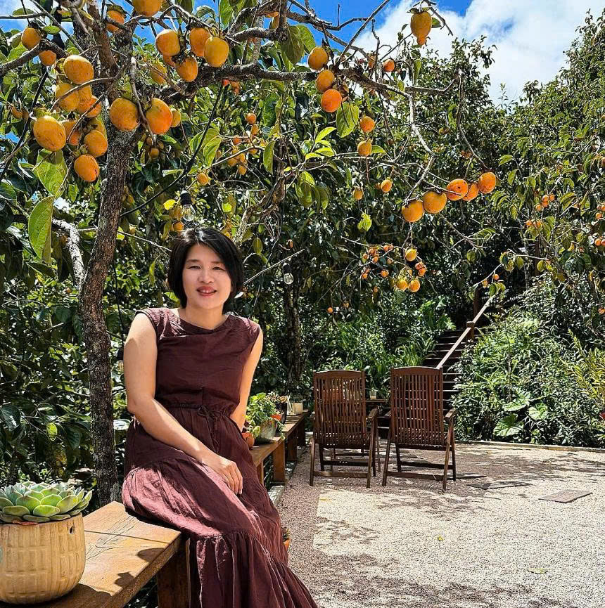
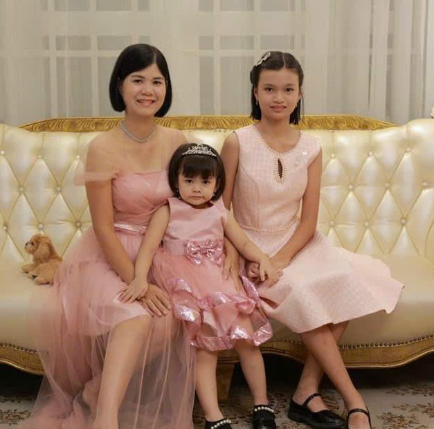
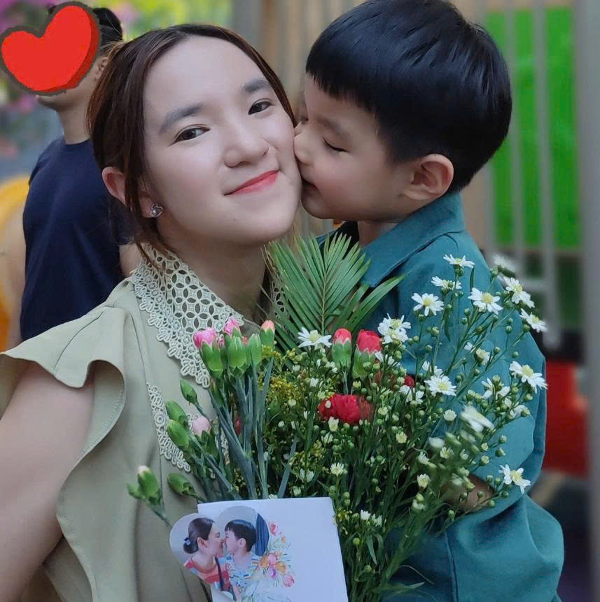
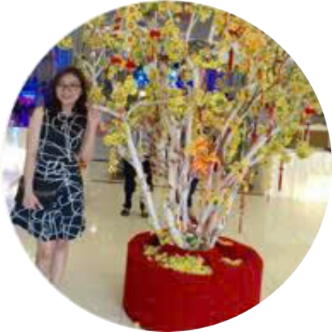
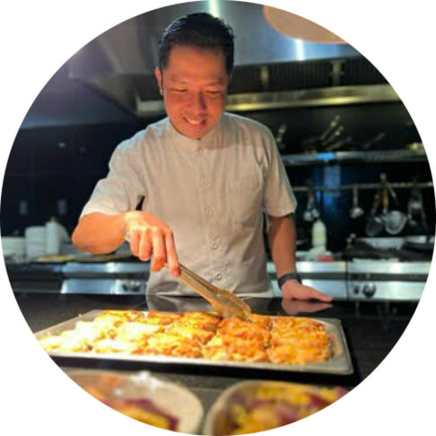

Trang Đang - Phụ huynh bé Mika★★★★★@TrangDang
Cảm ơn các thầy cô Học viện cờ vua Thông Thái thời gian qua luôn hướng dẫn Mika tận tình. Chị cảm thấy, tuy ban đầu Mika có sự rụt rè, nhưng các thầy cô đã giúp bé tự tin và vui vẻ hơn, đón nhận một môn thể thao tư duy mới. Môn cờ vua khá phức tạp, tuy nhiên cách dạy của các thầy dễ hiểu, lại vui vẻ, sinh động, nên Mika cũng tiếp thu tốt và quan trọng là đi học rất vui vẻ, chủ động. Bé Mika có thể nhớ khá nhanh và tiếp thu tập trung ổn, tuy nhiên nếu không luyện tập và nhắc lại thường xuyên, bé có thể quên kiến thức. Vậy nên chị mong muốn bé được thực hành luyện tập để duy trì được kỹ năng thú vị này.

Anh Thanh - Phụ huynh bé Quốc Cơ★★★★★@AnhThanh
Cảm nhận thấy con rất vui và hào hứng sau mỗi buổi học tại CLB. Con học được khả năng quan sát, rèn luyện tính kỷ luật trong từng ván đấu và còn được tham gia các giải thi đấu, giúp con tự tin và bản lĩnh hơn. Thầy luôn chăm sóc, hướng dẫn tận tình và chi tiết trong từng buổi học cũng như mỗi giải đấu. Ba mẹ rất vui khi thấy con học thêm được nhiều điều bổ ích và tiến bộ từng ngày.

Phu Huynh bé Anh Khôi★★★★★@AnhKhoi
Sau một thời gian học tại Học viện cờ vua Thông Thái, con đã có những bước tiến rõ rệt về khả năng tư duy và mức độ tập trung. Ba mẹ thật sự rất vui và hạnh phúc khi thấy con ngày càng tự tin, bản lĩnh hơn. Gia đình xin gửi lời cảm ơn chân thành đến Trung tâm và các thầy cô rất nhiều.

Chị Hoà - Phụ huynh bé Hà Phương★★★★★@XuanHoa
Từ khi học ở Học viện cờ vua Thông Thái, con trưởng thành hơn và biết quan sát mọi việc xung quanh kỹ lưỡng hơn.
Con rất thích học cùng thầy Long. Các bạn, anh chị ở trung tâm đều hòa đồng, vui vẻ và luôn chăm chỉ học hỏi lẫn nhau.
Ba mẹ cảm thấy con biết lắng nghe, tự quan sát và chủ động hơn trong mọi việc.
Cảm ơn Học viện cờ vua Thông Thái đã luôn đồng hành cùng con!

Chị Hường★★★★★@Huong
Con mình trước đây đã biết tự chơi cờ. Sau đó có cơ duyên được gặp và học với thầy Hải cách đây khoảng 4 năm. Trong 3 năm gần đây, con theo học tại cơ sở Vinhomes Grand Park và vẫn luôn cảm thấy vui vẻ, hào hứng trong mỗi buổi học. Việc học cờ giúp con rèn luyện khả năng quan sát và tính kiên nhẫn tốt hơn. Với mình, chỉ cần thấy con tiến bộ từng chút một như vậy là đã rất đáng quý. Cờ vua không chỉ là một trò giải trí mà còn giúp rèn luyện trí não và hình thành những phẩm chất tốt trong tính cách của con. Cảm ơn thầy cô đã tạo ra một môi trường và sân chơi bổ ích cho các con.
Phụ huynh Bé Jerry★★★★★@Jerry
Bé Jerry rất thích học cờ vua tại trung tâm. Mỗi ngày đi học về bé đều rất vui vẻ và hào hứng kể lại những điều đã học. Gia đình rất yên tâm khi cho bé theo học ở đây vì thầy Thịnh và cô Bích luôn dạy dỗ tận tình, nhẹ nhàng và quan tâm đến bé.
Phụ huynh Bé Hải Phương★★★★★@HaiPhuong
Cảm ơn Trung tâm cờ vua Truyền cảm hứng đã tạo ra môi trường học tập thú vị cho các bé, giúp bé nhà mình học vui vẻ và yêu thích môn cờ vua hơn, giúp bé có động lực tập luyện và thi đấu đạt giải ở trường ạ.
Phụ huynh Bé Kiến Văn★★★★★@YenNgo
Cảm nhận của ba/mẹ khi cho con tham gia học tại Học viện cờ vua Thông Thái?
Mong muốn ban đầu của mẹ là môn Kiến Vấn có thêm một hoạt động giúp rèn luyện tư duy và khả năng đưa ra quyết định, và cờ vua là lựa chọn phù hợp. Sau quá trình học tại Học viện cờ vua Thông Thái, con có sự thay đổi như thế nào?
Kiến Vấn tập trung hơn, biết lắng nghe ba mẹ nhiều hơn. Đặc biệt, con biết quan sát mọi thứ xung quanh kỹ hơn và trở nên kiên nhẫn hơn. Thầy cô, môi trường và bạn bè học tập tại trung tâm ra sao?
Thầy cô rất kiên nhẫn. Kiến Vấn là một học sinh có phần năng động, đôi lúc chưa kiểm soát tốt cảm xúc. Điều gì khiến ba mẹ cảm thấy vui và hạnh phúc khi thấy con thay đổi?
Kiến Vấn rất thích môn cờ vua. Bằng chứng là con thường tự mở sách bài tập ra đọc và yêu cầu mẹ cùng chơi cờ để rèn luyện thêm.

Chị Hiền - Phụ huynh Tina★★★★★@ThuHien
Con mình bắt đầu học cờ tại Học viện cờ vua Thông Thái từ năm 4 tuổi. Trước khi cho con theo học, mình đã thử cho bé đến một vài trung tâm khác để kiểm tra xem con đã sẵn sàng chưa, nhưng lúc đó các thầy đều hẹn dịp khác vì bé chưa đủ khả năng tập trung.
Khoảng một tháng sau, mình đưa bé đến Trung tâm Cờ vua Truyền Cảm Hứng. Ngay buổi đầu gặp thầy Thịnh và cô Bích, con đã rất hào hứng và quyết định theo học luôn. Trong suốt quá trình học, các thầy cô luôn nhẹ nhàng, tận tâm và thường xuyên động viên con.
Dù con chưa bộc lộ năng khiếu nổi bật hay đạt thành tích gì trong cờ vua, nhưng việc con kiên trì theo học suốt 1,5 năm qua khiến mình rất tự hào. Cảm ơn thầy cô tại Trung tâm Cờ vua Truyền Cảm Hứng đã luôn đồng hành cùng Tina.